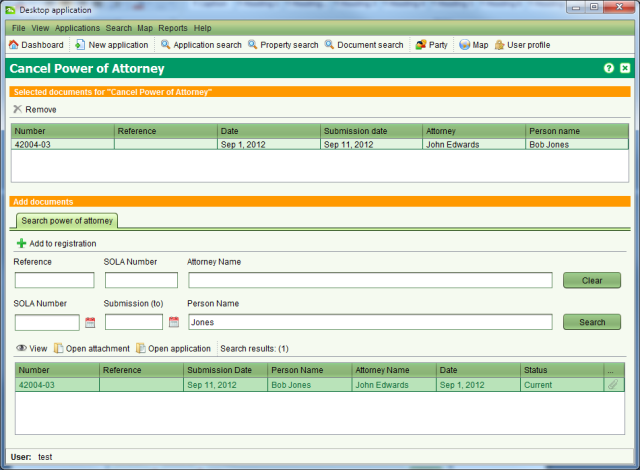

Cancel Power of Attorney
This service is used to revoke a Power of Attorney. The Power of Attorney will remain linked
to any applications or property transactions it was associated with prior to being revoked
but it will not be possible to use the Power of Attorney on any new applications.
Lodge an Application
Steps
-
-
From the Dashboard select the
 New
application tool to open the Application Details screen.
New
application tool to open the Application Details screen.
-
On the General tab, select the appropriate agent from the Agent dropdown. If the person
making the request is not listed in the drop down list, choose the Other Agent option
at the top of the list and enter the contact details for the person in the fields
provided.
-
On the Services tab, add the Cancel Power of Attorney service to the application.
-
This service does not directly reference a property so no property information is
required on the Property tab.
-
No supporting documents are required for this service, so there is no need to enter any
documents on the Documents tab.
-
No Map points are required.
-
Click the
 Save button. This will lodge
the application and produce the lodgment notice. Print the notice and give it to the
person as proof the application has been lodged. The lodgment notice will indicate the
fee to be paid for the application.
Save button. This will lodge
the application and produce the lodgment notice. Print the notice and give it to the
person as proof the application has been lodged. The lodgment notice will indicate the
fee to be paid for the application.
Fee Payment
Once the lodgment notice is printed, the person will need to take the notice to the cashier
in the finance section and arrange payment. When payment has been made, the cashier will
locate the Unassigned application list on the SOLA Dashboard,Open the
application and check the Fee Paid flag on the Fees tab to indicate the application can
continue processing.
Assign the Application
Steps
-
-
From the SOLA Dashboard, check the Unassigned applications list to confirm the fee for
the application has been paid. If the fee has not been paid it will not be possible to
assign the application. In this situation notify the person noted as the contact and/or
cashier to confirm the payment status for the application.
-
If the application fee has been paid, select the application in the Unassigned
applications list and click the
 Assign
tool. This will open the Application Assignment screen.
Assign
tool. This will open the Application Assignment screen.
-
Click the Assign button to assign the application. When the Assign action is complete,
you will be returned to the Dashboard and the assigned application will appear in your
Assigned applications list.
Revoke the Power of Attorney
As with registering the POA, you use the Document Registration screen to revoke the
POA.
Steps
-
-
From the Dashboard, Open the application with the Cancel
Power of Attorney service from your Assigned applications list.
-
On the Services tab, select the Cancel Power of Attorney service and click the Start tool. This will open the
Document Registration screen.
-
Use the Power of Attorney search to locate the POA to be revoked, select it from the
search results list and click
 Add to
registration.
Add to
registration.

Cancel Power of Attorney
-
-
Once complete, close the Document Registration screen and on the Services tab of
Application Details, select the Cancel Power of Attorney service and click
 Complete. This will run the SOLA business
rules to validate the application data. If there is a critical failure, you must remedy
the failure as it will not be possible to approve the application otherwise.
Complete. This will run the SOLA business
rules to validate the application data. If there is a critical failure, you must remedy
the failure as it will not be possible to approve the application otherwise.
Complete the Application
Steps
-
-
From the Dashboard, Open the application with the Cancel
Power of Attorney service from your Assigned applications list (if not already opened).
-
Use theValidate tool to check the
status of the application data. If there are any rule failures, review the application
data and correct the issues as appropriate before proceeding to approve the
application.
-
Use the
 Approve action in the
Application action dropdown to approve the application.
Approve action in the
Application action dropdown to approve the application.
-
Manually prepare a notification to confirm the POA has been revoked and send/deliver
this to the contact person. You can record that when the notification has been sent by
using theDispatch action of the
Application action dropdown.
-
Use the
 Archive action to complete the
Application.
Archive action to complete the
Application.
Notes
-
Revoking the Power of Attorney will not delete it from SOLA, but it will prevent the POA
being used on any future application.